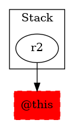

-1 : r2 := @this: TestMidsem$NodeMidesemD -> class soot.jimple.internal.JIdentityStmt
-1 : r7 := @parameter0: testcase.TestMidsem$NodeMidesemA
-1 : r0 := @parameter1: testcase.TestMidsem$NodeMidesemD
28 : $r8 = new testcase.TestMidsem$NodeMidesemA
-1 : $r10 = (testcase.TestMidsem$NodeMidesemD) r2
28 : $r3 = $r10.|testcase.TestMidsem$NodeMidesemD: testcase.TestMidsem this$0|
28 : specialinvoke $r8.|testcase.TestMidsem$NodeMidesemA: void |init|(testcase.TestMidsem)|($r3)
28 : r0.|testcase.TestMidsem$NodeMidesemD: testcase.TestMidsem$NodeMidesemA f| = $r8
29 : $r9 = new testcase.TestMidsem$NodeMidesemB
-1 : $r11 = (testcase.TestMidsem$NodeMidesemD) r2
29 : $r5 = $r11.|testcase.TestMidsem$NodeMidesemD: testcase.TestMidsem this$0|
29 : specialinvoke $r9.|testcase.TestMidsem$NodeMidesemB: void |init|(testcase.TestMidsem)|($r5)
30 : return $r9
